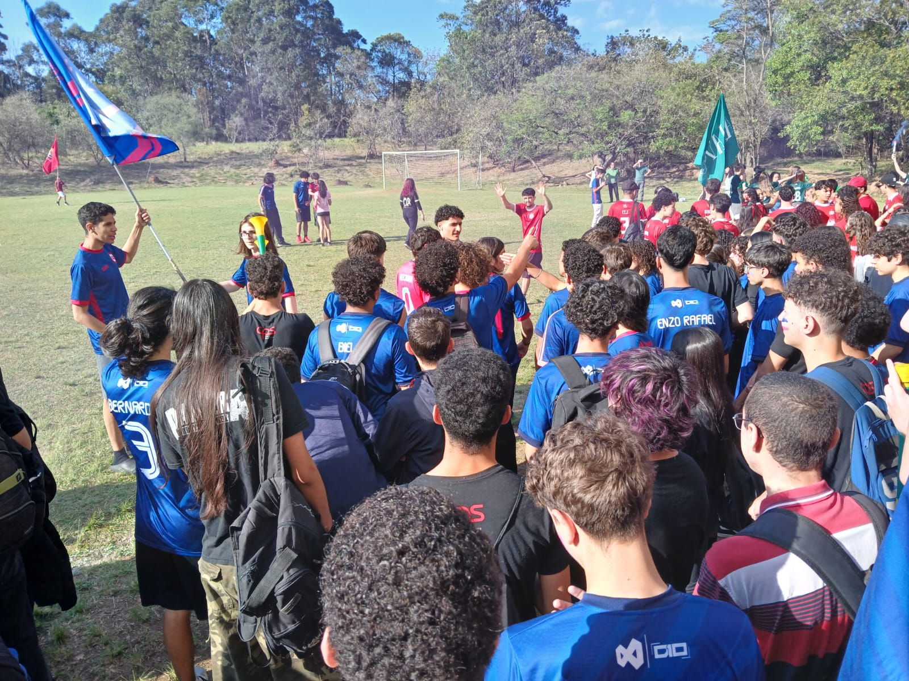

O que é a Semana Paulo Freire
A Semana Paulo Freire é um evento esportivo e cultural que acontece anualmente na ETEC Vasco Antônio
Venchiarutti, em homenagem ao educador pernambucano considerado o patrono da educação brasileira. O
objetivo é promover a integração entre os estudantes e valorizar o trabalho em equipe por meio de
diversas competições.
Organizada pelos alunos do Grêmio Escolar, a semana reúne os oito principais cursos MTEC 🔗, que competem
em diferentes esportes e brincadeiras 🔗 para definir o grande campeão.
Na edição de 2025, o título ficou com o C (Desenvolvimento de Sistemas). Em mais de 11 anos de história,
o maior vencedor é o E (Logística), com 6 títulos, seguida pelo A (Design de Interiores) e o C
(Desenvolvimento de Sistemas), com 2 títulos cada, e o B (Edificações), com 1 título.
Mais do que uma disputa, a Semana Paulo Freire representa o espírito de união e celebração entre os
alunos da ETEC, reforçando os valores de colaboração e aprendizado coletivo.
| Horário | Campo | Quadra Coberta | Quadra Aberta | Pátio | Sala E.F | Sala Cristina |
|---|---|---|---|---|---|---|
| 7:30 - 8:10 | ABERTURA | |||||
| 8:10 - 9:10 | Fut Campo D x V |
Futsal Fem. E x D |
Vôlei C x W |
--- | Ping Pong Ind. A x W |
Xadrez E x C Xadrez B x A |
| 9:10 - 10:00 | --- | Futsal Fem. C x A |
Vôlei B x E |
--- | Ping Pong Ind. D x V |
Xadrez D x V |
| 10:00 - 10:20 | INTERVALO | |||||
| 10:20 - 11:20 | Fut Campo B x E |
--- | Vôlei A x D |
--- | --- | --- |
| 11:20 - 11:50 | --- | Futsal Fem. B x Z |
Queimada D x V |
--- | Ping Pong Ind. C x Z / B x E |
--- |
| 11:50 - 13:00 | Handball Z x E |
Handball B x A |
--- | Mala e Cuia | --- | --- |
Biografia de Paulo Freire
Paulo Reglus Neves Freire nasceu em 19 de setembro de 1921, no Recife (PE). É considerado um dos
maiores educadores do mundo e o Patrono da Educação Brasileira. Desde cedo, viveu de perto as
dificuldades da pobreza, o que despertou seu interesse em lutar por uma educação mais justa e
acessível a todos.
Formou-se em Direito, mas logo se dedicou ao ensino e à pesquisa sobre educação. Na década de 1950,
desenvolveu um método inovador de alfabetização de adultos, que valorizava o diálogo e a experiência
de vida dos alunos. Esse método ficou conhecido como Método Paulo Freire e foi aplicado com grande
sucesso, ajudando muitos trabalhadores a aprender a ler e escrever em pouco tempo.
Com o golpe militar de 1964, Freire foi preso e exilado, pois suas ideias de uma educação crítica e
libertadora eram vistas como ameaça pelo regime. Viveu no Chile, Estados Unidos e Suíça, onde
continuou seu trabalho e publicou obras importantes, como “Pedagogia do Oprimido” (1968), uma das
obras mais influentes da educação mundial.
Ao retornar ao Brasil em 1980, participou ativamente da reconstrução democrática e foi Secretário de
Educação de São Paulo, sempre defendendo uma escola pública de qualidade e o direito de todos ao
conhecimento.
Paulo Freire faleceu em 2 de maio de 1997, deixando um legado que inspira educadores no Brasil e no
mundo. Suas ideias continuam vivas, mostrando que educar é um ato de amor, liberdade e transformação
social.
Porque acontece a Semana Paulo Freire
A Semana Paulo Freire também serve como um momento de confraternização e descanso para os alunos da
ETECVAV, celebrando a competitividade e o espírito esportivo, com torcidas apaixonadas pelos cursos,
esportes acontecendo à todo momento, e jogadores em busca da glória eterna.
Os alunos participam ativamente, formando uniões entre cursos, como a união C (Desenvolvimento de
Sistemas) e V (Recursos Humanos) e a união “Desinfolog” do A (Design de Interiores), D (Infonet) e E
(Logística).
